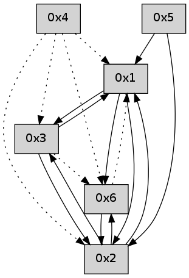

>> << IDX [start] -100 -25 -5 +0 +5 +25 +100 [435.173249006]
 Previous packets
----------------------------------------------------------------------
430.252172 beacon01(adaf) #0 coord=01,02,05,03,04,06 cycle=432.0ms assoc
-- color-indic=0 64 ea 50
430.262131 beacon02(adaf) #0 coord=01,02,05,03,04,06 cycle=432.0ms assoc 64 bb af
430.272133 beacon05(adaf) #0 coord=01,02,05,03,04,06 cycle=432.0ms assoc 64 1d 85
430.282132 beacon03(adaf) #0 coord=01,02,05,03,04,06 cycle=432.0ms assoc 64 81 a1
430.292132 beacon04(adaf) #0 coord=01,02,05,03,04,06 cycle=432.0ms assoc 64 27 8b
430.302134 beacon06(adaf) #0 coord=01,02,05,03,04,06 cycle=432.0ms assoc 64 53 97
430.313543 [Hello(1): seq=127 sym=5,2 mpr= sysInfo= stat=5:13,0,0,0/2:6,0,0,0]
430.317440 [Hello(4): seq=228 asym=2,1 sysInfo= stat=2:3,0,0,0/1:13,0,0,0]
430.319220 [Hello(6): seq=143 sym=2 asym=1 sysInfo= stat=2:3,0,0,0/1:0,0,0,0]
----------------------------------------------------------------------
430.744279 beacon01(adaf) #0 coord=01,02,05,03,04,06 cycle=432.0ms assoc
-- color-indic=0 64 2e 3f
430.754242 beacon02(adaf) #0 coord=01,02,05,03,04,06 cycle=432.0ms assoc 64 7f c0
430.764239 beacon05(adaf) #0 coord=01,02,05,03,04,06 cycle=432.0ms assoc 64 d9 ea
430.774240 beacon03(adaf) #0 coord=01,02,05,03,04,06 cycle=432.0ms assoc 64 45 ce
430.784240 beacon04(adaf) #0 coord=01,02,05,03,04,06 cycle=432.0ms assoc 64 e3 e4
430.794241 beacon06(adaf) #0 coord=01,02,05,03,04,06 cycle=432.0ms assoc 64 97 f8
430.805930 [Hello(2): seq=725 sym=5,6,1,3 sysInfo= stat=5:12,0,0,0/6:2,0,0,0/1:1,0,0,0/3:0,0,0,0]
----------------------------------------------------------------------
431.236386 beacon01(adaf) #0 coord=01,02,05,03,04,06 cycle=432.0ms assoc
-- color-indic=0 64 70 5e
431.246347 beacon02(adaf) #0 coord=01,02,05,03,04,06 cycle=432.0ms assoc 64 21 a1
431.256347 beacon05(adaf) #0 coord=01,02,05,03,04,06 cycle=432.0ms assoc 64 87 8b
431.266347 beacon03(adaf) #0 coord=01,02,05,03,04,06 cycle=432.0ms assoc 64 1b af
431.276348 beacon04(adaf) #0 coord=01,02,05,03,04,06 cycle=432.0ms assoc 64 bd 85
431.286348 beacon06(adaf) #0 coord=01,02,05,03,04,06 cycle=432.0ms assoc 64 c9 99
431.297464 [Hello(1): seq=128 sym=5,3,2,6 sysInfo= stat=5:13,0,0,0/3:0,0,0,0/2:7,0,0,0/6:0,0,0,0]
431.301688 [Hello(4): seq=229 asym=2,6,1 sysInfo= stat=2:4,0,0,0/6:0,0,0,0/1:13,0,0,0]
----------------------------------------------------------------------
431.728494 beacon01(adaf) #0 coord=01,02,05,03,04,06 cycle=432.0ms assoc
-- color-indic=0 64 b4 31
431.738455 beacon02(adaf) #0 coord=01,02,05,03,04,06 cycle=432.0ms assoc 64 e5 ce
431.748456 beacon05(adaf) #0 coord=01,02,05,03,04,06 cycle=432.0ms assoc 64 43 e4
431.758457 beacon03(adaf) #0 coord=01,02,05,03,04,06 cycle=432.0ms assoc 64 df c0
431.768456 beacon04(adaf) #0 coord=01,02,05,03,04,06 cycle=432.0ms assoc 64 79 ea
431.778456 beacon06(adaf) #0 coord=01,02,05,03,04,06 cycle=432.0ms assoc 64 0d f6
431.790153 [Hello(2): seq=726 sym=5,6,1,3 sysInfo= stat=5:12,0,0,0/6:3,0,0,0/1:2,0,0,0/3:0,0,0,0]
----------------------------------------------------------------------
432.220601 beacon01(adaf) #0 coord=01,02,05,03,04,06 cycle=432.0ms assoc
-- color-indic=0 64 f8 81
432.230562 beacon02(adaf) #0 coord=01,02,05,03,04,06 cycle=432.0ms assoc 64 a9 7e
432.240562 beacon05(adaf) #0 coord=01,02,05,03,04,06 cycle=432.0ms assoc 64 0f 54
432.250563 beacon03(adaf) #0 coord=01,02,05,03,04,06 cycle=432.0ms assoc 64 93 70
432.260563 beacon04(adaf) #0 coord=01,02,05,03,04,06 cycle=432.0ms assoc 64 35 5a
432.270563 beacon06(adaf) #0 coord=01,02,05,03,04,06 cycle=432.0ms assoc 64 41 46
432.282232 [Hello(4): seq=230 asym=2,6,1 sysInfo= stat=2:5,0,0,0/6:0,0,0,0/1:13,0,0,0]
432.287696 [Hello(1): seq=129 sym=5,3,2,6 sysInfo= stat=5:13,0,0,0/3:0,0,0,0/2:8,0,0,0/6:1,0,0,0]
----------------------------------------------------------------------
432.712710 beacon01(adaf) #0 coord=01,02,05,03,04,06 cycle=432.0ms assoc
-- color-indic=0 64 3c ee
432.722672 beacon02(adaf) #0 coord=01,02,05,03,04,06 cycle=432.0ms assoc 64 6d 11
432.732672 beacon05(adaf) #0 coord=01,02,05,03,04,06 cycle=432.0ms assoc 64 cb 3b
432.742671 beacon03(adaf) #0 coord=01,02,05,03,04,06 cycle=432.0ms assoc 64 57 1f
432.752674 beacon04(adaf) #0 coord=01,02,05,03,04,06 cycle=432.0ms assoc 64 f1 35
432.762674 beacon06(adaf) #0 coord=01,02,05,03,04,06 cycle=432.0ms assoc 64 85 29
432.774349 [Hello(2): seq=727 sym=5,6,1,3 sysInfo= stat=5:12,0,0,0/6:3,0,0,0/1:3,0,0,0/3:0,0,0,0]
----------------------------------------------------------------------
433.204817 beacon01(adaf) #0 coord=01,02,05,03,04,06 cycle=432.0ms assoc
-- color-indic=0 64 71 e9
433.214778 beacon02(adaf) #0 coord=01,02,05,03,04,06 cycle=432.0ms assoc 64 20 16
433.224778 beacon05(adaf) #0 coord=01,02,05,03,04,06 cycle=432.0ms assoc 64 86 3c
433.234779 beacon03(adaf) #0 coord=01,02,05,03,04,06 cycle=432.0ms assoc 64 1a 18
433.244779 beacon04(adaf) #0 coord=01,02,05,03,04,06 cycle=432.0ms assoc 64 bc 32
433.254780 beacon06(adaf) #0 coord=01,02,05,03,04,06 cycle=432.0ms assoc 64 c8 2e
433.266453 [Hello(4): seq=231 asym=2,6,1 sysInfo= stat=2:6,0,0,0/6:0,0,0,0/1:14,0,0,0]
433.270137 [Hello(3): seq=231 sym=2,1 asym=6 sysInfo= stat=2:6,0,0,0/1:14,0,0,0/6:0,0,0,0]
433.271925 [Hello(1): seq=130 sym=5,3,2,6 sysInfo= stat=5:13,0,0,0/3:0,0,0,0/2:9,0,0,0/6:1,0,0,0]
----------------------------------------------------------------------
433.696926 beacon01(adaf) #0 coord=01,02,05,03,04,06 cycle=432.0ms assoc
-- color-indic=0 64 b5 86
433.706887 beacon02(adaf) #0 coord=01,02,05,03,04,06 cycle=432.0ms assoc 64 e4 79
433.716887 beacon05(adaf) #0 coord=01,02,05,03,04,06 cycle=432.0ms assoc 64 42 53
433.726887 beacon03(adaf) #0 coord=01,02,05,03,04,06 cycle=432.0ms assoc 64 de 77
433.736887 beacon04(adaf) #0 coord=01,02,05,03,04,06 cycle=432.0ms assoc 64 78 5d
433.746888 beacon06(adaf) #0 coord=01,02,05,03,04,06 cycle=432.0ms assoc 64 0c 41
433.758584 [Hello(2): seq=728 sym=6,1,3 sysInfo= stat=6:4,0,0,0/1:4,0,0,0/3:1,0,0,0]
----------------------------------------------------------------------
434.189033 beacon01(adaf) #0 coord=01,02,05,03,04,06 cycle=432.0ms assoc
-- color-indic=0 64 f9 36
434.198995 beacon02(adaf) #0 coord=01,02,05,03,04,06 cycle=432.0ms assoc 64 a8 c9
434.208995 beacon05(adaf) #0 coord=01,02,05,03,04,06 cycle=432.0ms assoc 64 0e e3
434.218994 beacon03(adaf) #0 coord=01,02,05,03,04,06 cycle=432.0ms assoc 64 92 c7
434.228995 beacon04(adaf) #0 coord=01,02,05,03,04,06 cycle=432.0ms assoc 64 34 ed
434.238997 beacon06(adaf) #0 coord=01,02,05,03,04,06 cycle=432.0ms assoc 64 40 f1
434.250673 [Hello(4): seq=232 asym=2,6,1,3 sysInfo= stat=2:7,0,0,0/6:0,0,0,0/1:15,0,0,0/3:0,0,0,0]
434.252491 [Hello(1): seq=131 sym=3,2,6 sysInfo= stat=3:0,0,0,0/2:10,0,0,0/6:1,0,0,0]
434.254355 [Hello(3): seq=232 sym=2,1 asym=6 sysInfo= stat=2:7,0,0,0/1:15,0,0,0/6:0,0,0,0]
----------------------------------------------------------------------
434.681142 beacon01(adaf) #0 coord=01,02,05,03,04,06 cycle=432.0ms assoc
-- color-indic=0 64 3d 59
434.691103 beacon02(adaf) #0 coord=01,02,05,03,04,06 cycle=432.0ms assoc 64 6c a6
434.701102 beacon05(adaf) #0 coord=01,02,05,03,04,06 cycle=432.0ms assoc 64 ca 8c
434.711104 beacon03(adaf) #0 coord=01,02,05,03,04,06 cycle=432.0ms assoc 64 56 a8
434.721104 beacon04(adaf) #0 coord=01,02,05,03,04,06 cycle=432.0ms assoc 64 f0 82
434.731103 beacon06(adaf) #0 coord=01,02,05,03,04,06 cycle=432.0ms assoc 64 84 9e
434.742786 [Hello(2): seq=729 sym=6,1,3 sysInfo= stat=6:5,0,0,0/1:5,0,0,0/3:2,0,0,0]